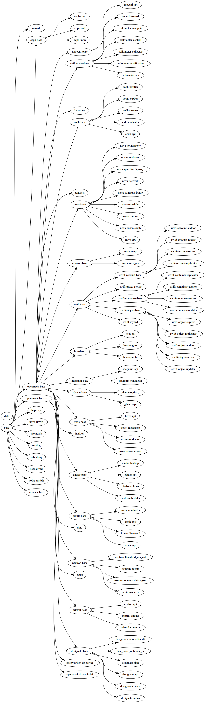

项目目标
Kolla 提供了生产级别的 OpenStack Service Containers。基于社区的最佳实践，提供了
更好，更快，更可靠的, 操作 OpenStack 的部署工具。
解决的问题
- 平滑的升级/回滚 OpenStack
- 隔离 OpenStack 的不同组件的依赖环境。尤其是那些使用同一模块不同版本的情况。
- 保证环境的一致性。解决由于安装时间不同，造成的包版本不一致的情况。
- 支持多种安装源：源代码安装，CentOS binary 安装等。可以替代掉 devstack。
其实这些问题只要是由 Docker 来解决的。这也是 Kolla 使用 Docker 的原因。
架构
kolla 代码在https://github.com/openstack/kolla。现在 Kolla 主要分成两个部分。
- Docker Images Build
- Ansible 部署(这部分将来会迁移到 kolla-ansible 项目)
Docker Image Build
主要使用 Jinja2 模板生成 Dockerfile 文件。如果是源代码安装，还会把代码下载好。之后会通过 Docker-py 驱动 Docker 进行镜像构建。构建完成，还可以根据配置将镜像推送的指定的 Registry 服务器。
现在支持的不同的 Linux 发行版本(Redhat系和Debian系)和不同的OpenStack安装包(源代码和二进制包)
下图是现在所有镜像的依赖关系。

Ansible 部署
提供一个完整的 Ansible Playbook，来部署Docker的镜像。并提供 all-in-one 和
multihost 的环境
开发人员情况
以下是 Kolla 项目截至到 2016-01-20 日的 review, commit 情况
可以看出，主流的几大 OpenStack 厂商均贡献的大部分的代码。包括 Mirantis, RedHat, Oracle, Intel, 99Cloud, Cisco, Rakespace。
近况
201512
- 废弃使用 Ansible 自带的 Docker module。使用自己实现的 docker 模块, 并已经完成了所有 ansible roles 的改造。主要原因是：
- 官方 Docker module 有bug, 在docker 1.8.3 及以上的版本工作不正常, 而且进展缓慢。而 Kolla 使用的 Docker 版本只能锁定在 1.8.2，不能进行升级。
- Ansible 使用的是 GPL，而 OpenStack 项目使用的 Apache License。不能直接修改Ansible 的代码放到 Kolla 里使用。
- 不想受限制于官方功能开发。有些想用的功能(比方说新加进去的
common_option, 官方是不会增加的)。
- 使用 oslo.config 模块替代掉了原来的 argparser 代码。并加上了使用
oslo-config-generator 的功能自动生成配置文件。
- 完善 Ubuntu Binary Container 的安装
- 由于 Ubuntu 并没有类似 RDO 的 relorean 源。倒是有一个 Mitaka Staging源，但是好久没有更新。所以社区之前一直没有加上这部分功能。现在虽然加上了，但是也是基于 Liberty 版本的。并不是 Master 上的代码。
- 另一方面，Ubuntu 方面也正在积极的解决这个问题。相信不久就会有。
- 升级的 playbook 基本完成来。
使用到的技术
- Docker/LXC
- Ansible
- Python
近期规划
- 拆分 ansible 部分到新的项目 kolla-ansible。kolla 项目只用来做 docker images build. 部署工作由 kolla-ansible, kolla-mesos等工具来实现。
- 如何进行平滑的 OpenStack 升级
- ELK的集成
- Swift 自动化
- Ceilometer Container
REF